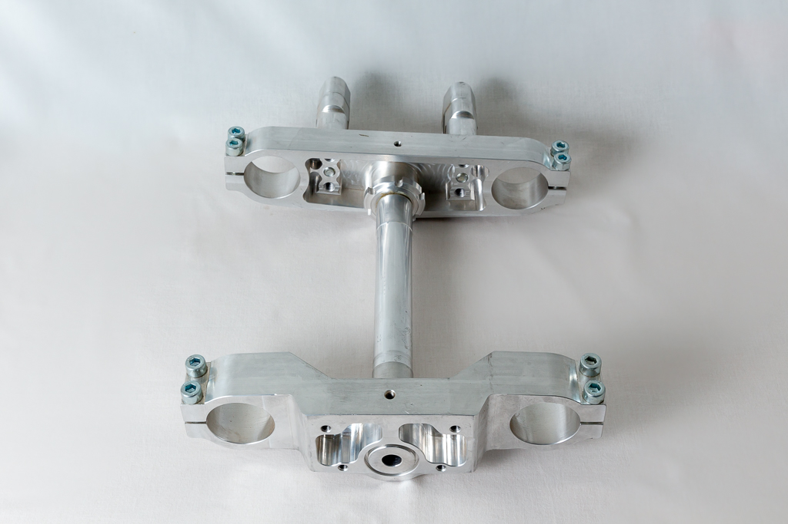
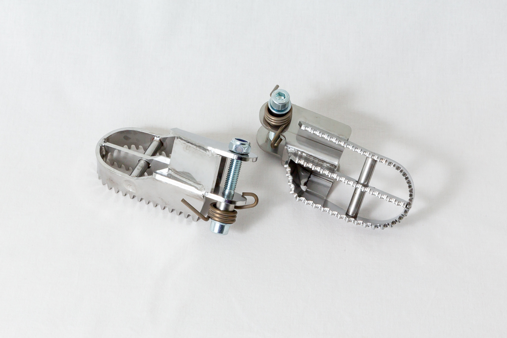
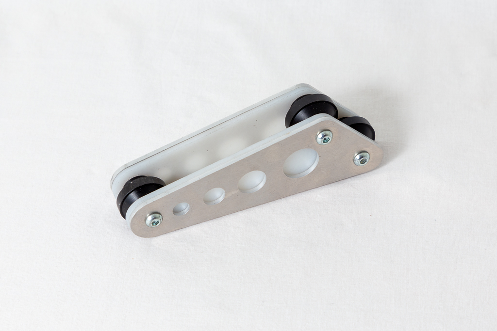
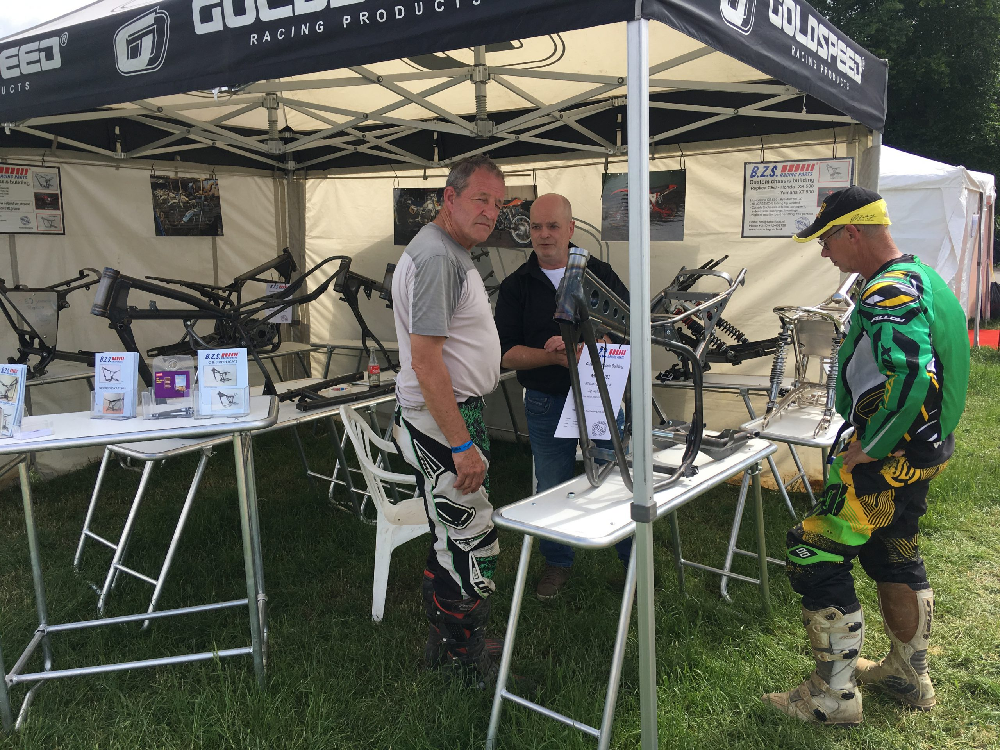

Our Products
All frames constructed from high-grade chromium molybdenum tube (25CrMo4), TIG/MIG welded with special welding wire. Bending by computer-controlled 3-axis MACRI bending machine.

After discussions with the factory mechanic from MAICO in the years '78 to '82, Steve Butler, and factory driver Yvan van de Broeck, we came to this result of the model '81. This version is the best MAICO ever built according to the ex factory team mechanic and factory rider. At that time he already got the nickname "The best twinshockbike ever build".
This exact replica is rebuilt with great precision from high-grade chromium-molybdenum tube (25CrMo4). TIG welded with special welding wire.
Supplied as kit:
Weight: 14.4 kg (Original Maico '81: 15.5 kg)

Based on the same '81 design but adapted for the 1983-1984 engine. Same precision construction from 25CrMo4 chromium-molybdenum tube with TIG welding.

These exact replicas of the famous 70's Husqvarna 2-stroke frames are rebuilt with great precision and of high quality chromium molybdenum tube (25CrMo4). TIG welded with special welding wire.
This frame is built one on one and in this frame the 125cc, the 250cc as well as the 500cc engine fits.
Supplied: frame incl. swingarm.
Weight: 12.2 kg
The popular four-stroke crosser for the twinshock class — the Husky of 1984. Designed in close collaboration with 4-stroke and motocross technician Chris Verlinden from Belgium.
The shape of the central top tube has been changed for a Keihin FCR carburetor. The side tubes can be dismantled for easy maintenance during competitions. The frame construction is narrower at the seat for finer handling.
Supplied: frame incl. swingarm.
Weight: 11.8 kg

These exact replicas of the famous 80's C&J frames are rebuilt with great precision and of high quality chromium molybdenum tube (25CrMo4). TIG welded with special welding wire.
The basis for this frame is the standard XR500, but most of the times customers choose for a tank, buddyseat, fenders, wheels and suspension of a CR250 '79 or '80.
Supplied as kit:
Weight: 15.5 kg
These exact replicas of the famous 80's C&J frames are rebuilt with great precision and of high quality chromium molybdenum tube (25CrMo4). TIG welded with special welding wire.
This frame is built based on the standard XT500 but most of the times customers choose for a tank, plastic and buddyseat of an YZ model of the late 70's or early 80's.
Supplied as kit:
Weight: 16.5 kg
B.Z.S. Racing Parts is producing this RM 85cc frame due to a high demand for larger and higher 85cc MX-bikes. Due to our 30 years experience in the motorsport and due to the co-operation with the better teams we have ended up with this frame design for the extra high RM 85.
The geometry of the frame has been improved and the frame has been provided with a removable subframe which is not the case with the original Suzuki frame.
Original frame weight: 8.3 kg
Weight: 8.55 kg (incl. subframe)
This is a higher special frame for the Honda CRF 150. This frame has been designed in close cooperation with the firm V.H.S. and the frames are exclusively built for V.H.S. Motoren.
Frames are built on stock — normally ready for delivery within a week. Packed in a sturdy box, shipped worldwide.